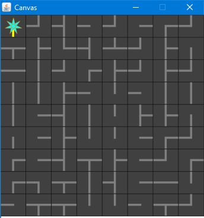
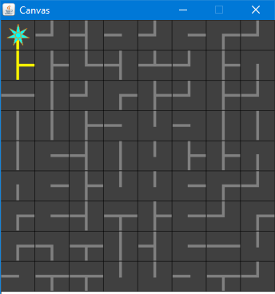
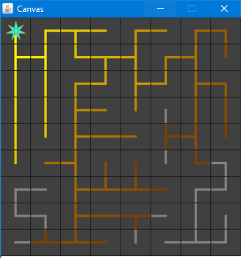
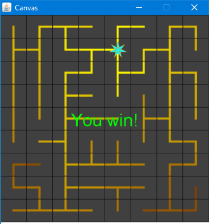
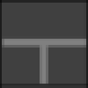
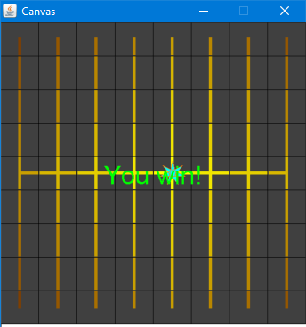
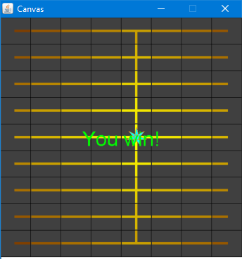
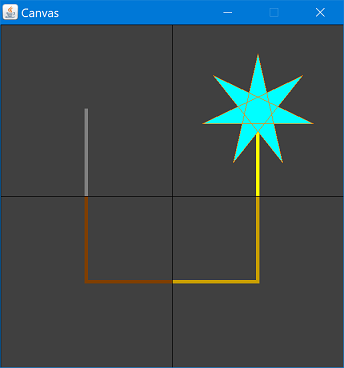
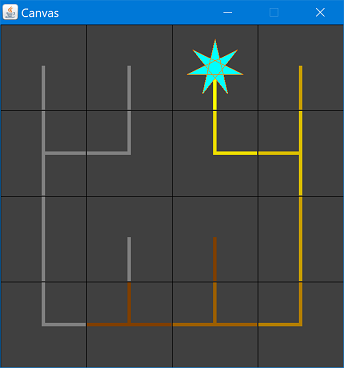
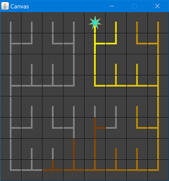

Assignment 9: LightEmAll
Goals: Design a game with mutable world state, ArrayLists, and loops. Practice working with graphs and graph algorithms by using Kruskal’s algorithm.
You will be using the Impworld library, as in Recitation 10 —
import java.util.ArrayList; import tester.*; import javalib.impworld.*; import java.awt.Color; import javalib.worldimages.*;
Make sure you do not name any of your files World.java, or else the autograder will not be able to compile your code.
Instructions
This assignment is long. Start early.
You will submit this project three times. Submit all the files needed for your game, in one .zip file.
The three submissions will be organized as follows:
Part 1 Due: Monday April 8 at 11:00pm. You must complete the task
of designing and implementing the GamePiece class —
Part 2 Due: Thursday April 11 at 11:00pm. You must complete the power-up behavior (where the power station has some finite radius of effectiveness), drawing the powered lines, and moving the power station when the arrow keys are pressed. You will generate a fractal-like board using a subdivision algorithm.
Part 3 Due: Wednesday April 17 at 11:00pm. You must implement Kruskal’s algorithm to generate a random board, plus any additional features or extra credit you attempt.
Extra credit will only count if they are convincingly and thoroughly tested,
and if the rest of the assignment is completed equally thoroughly —
Gameplay
This assignment is based on a game called Power Line. The main difference is that our power station has some finite radius of effectiveness, and must be moved to ensure power reaches every tile.
You goal is to light up every tile of the board, by ensuring that all the wires are connected to the power station. Initially, the board has been scrambled by randomly rotating each tile:

You can click to rotate tiles to join the wires together, but you cannot move tiles:

However, there is more to the puzzle —

Therefore, you will have to use the arrow keys to move the power station. Furthermore, the power station must follow the path created by the wiring. The player wins when all the tiles are lit up:

1 Tasks
Here is the list of tasks you will need to complete to implement the game.
1.1 Setting up the game
You will need to create a two-dimensional grid of GamePieces to represent the board. The width and height of the board should be specified as arguments to your LightEmAll constructor. Because the size of the board is configurable, you cannot simply hard-code lists of data, because they may be of the wrong size. Instead, you’ll need to use loops and ArrayLists.
class LightEmAll extends World { // a list of columns of GamePieces, // i.e., represents the board in column-major order ArrayList<ArrayList<GamePiece>> board; // a list of all nodes ArrayList<GamePiece> nodes; // a list of edges of the minimum spanning tree ArrayList<Edge> mst; // the width and height of the board int width; int height; // the current location of the power station, // as well as its effective radius int powerRow; int powerCol; int radius; }
Effectively, we have created a graph, where each GamePiece is a node and the wires are edges.
Each GamePiece represents a tile on the board, and has wires extending to adjacent GamePieces. The boolean fields left, right, top, and bottom indicate which neighboring GamePieces can be connected:
class GamePiece { // in logical coordinates, with the origin // at the top-left corner of the screen int row; int col; // whether this GamePiece is connected to the // adjacent left, right, top, or bottom pieces boolean left; boolean right; boolean top; boolean bottom; // whether the power station is on this piece boolean powerStation; }
For example, the following GamePiece has left, right, and bottom set to true:

A GamePiece may also have a power station, which supplies power to all reachable GamePieces, up to an effective radius, where the radius is defined as \((diameter / 2) + 1\). To compute the diameter of your graph, first run breadth-first search (see below) to determine the last-found GamePiece. Next, run breadth-first search starting from that last-found piece and count the depth to the new last-found piece again. That depth is the diameter of the graph.
The initial position of the power station will depend on which board generation strategy you are using.
class Edge { GamePiece fromNode; GamePiece toNode; int weight; }
The specific wiring of the board can be thought of as a “maze”, which is generated by one of three strategies, discussed below. After this step is complete, the game will shuffle the board, by applying a random number of rotations to each GamePiece.
1.2 Board generation strategies
There are three different board generation strategies to implement, one for each submission.
1.2.1 Manual generation
For Part 1, the board will be manually generated, i.e., you will encode a specific board in the game logic, and every game will have the same solution. You should choose a simple pattern, such as all vertical lines with a single, horizontal bar through the center:

Or all horizontal lines with a single, vertical bar through the center:

In both of these boards, the initial position of the power station should be at the center.
1.2.2 Fractal-like generation
For Part 2, you will use a subdivision algorithm to generate fractal-like wiring.
The simplest board is a square whose sides are a power of two. The smallest such board is the base case: a 2×2 grid where the wires form a squared off U:

The next case is a 4×4 grid, where each quadrant is the 2×2 base case. Furthermore, the quadrants are connected in three locations: at the left, right, and bottom:

Of course, as the board size increases, the fractal becomes more and more complex:

You’ll likely want to implement this algorithm in a “top-down” manner: start with a grid, subdivide it into four quadrants, recursively generate the wires in each quadrant, then connect the four quadrants.
The overall algorithm should be robust so that it can handle non-square grids and side lengths that are not powers of two.
Hint: Recall how binary search handles the base case. This will be very similar, but not exactly the same.
Initially, the power station should be located in the middle of the first row.
1.2.3 Random generation
For Part 3, you will generate random boards. By treating the wires as edges on a graph and randomly assigning edge weights, you can use Kruskal’s algorithm (see below) to find the minimum spanning tree.
The power station will initially be at the origin, i.e., the top-left corner.
1.3 Rendering the game
GamePiece tiles should be drawn with dark backgrounds. A wire should be yellow when it is powered, and grey when unpowered.
You do not need to draw wires getting progressively darker as the distance from the power station increases. Implementing this functionality is extra credit.
The power station should be drawn as a star, on top of the wires.
2 Extra credit
If you want to earn extra credit on this assignment, you can complete any number of “whistles” and “bells”. A “whistle” is a fairly small extension to the game; a “bell” is a more elaborate and impressive enhancement. It would take several whistles to be as impressive as a single bell. Whistles and bells are not worth a specific number of extra credit points; they are subjectively graded, and will count toward improving your exam scores if needed. (You should therefore aim to implement features that demonstrate that you have mastered the concepts that you got wrong on your exams!)
Whistles and bells will only count towards extra credit if they are
convincingly and thoroughly tested. Moreover, the rest of the game must be at
least as well tested —
Here are some examples of whistles and bells:
Enhancing the graphics. For example, you could implement the gradient coloring, as wires get further from the power station. (Very small whistle!)
Allowing the player to start a new puzzle without restarting the program.
Keeping score: how many steps does the player take before connecting all the wires? Lower scores are better... You’d need to enhance the display to render the score so far somehow.
Or, keeping time: display how long it takes for the player to beat the game.
(Tricky!) Construct wiring with a bias in a particular direction —
a preference for horizontal or vertical wires. (Hint: you might wish to play tricks with edge weights here.) - Hard! (But very cool) Different wire connectivity: You’ve implemented the board as a connected grid of squares. Try implementing the board as a connected grid of hexagons. To do this, you’d need:
To figure out how to render a hexagon. See The Image Library.
To figure out how to represent a hexagonal grid. You’ll need to update your GamePiece class to have six neighbors instead of four. You’ll also need to figure out how to represent a hexagonal grid using a normal ArrayList<ArrayList<GamePiece>>. (Hint: if you look at the rows of a hexagonal grid, every other row is “shifted” by half a cell-width, but there are the same number of cells in every row, so a regular ArrayList<ArrayList<GamePiece>> should still work.)
To figure out how to render a hexagonal grid. You’ll need a little bit of math to figure out the centers of each hexagon.
To figure out user-input controls. I suggest using the letter ‘a’, ‘w’, ‘e’, ‘d’, ‘x’ and ‘z’, to mean their “obvious” directions (relative to the letter ‘s’ on the keyboard).
You are encouraged and welcome to think of other enhancements to the game; talk them over with the professors to determine if they are whistles or bells. Have fun!
3 Reference materials
3.1 Kruskal’s Algorithm for constructing Minimum Spanning Trees
Here is Kruskal’s algorithm illustrated on a particular example graph:
A -----30------- B -----50------- F
\ / | /
\ / | /
50 35 40 50
\ / | /
\ / | /
\ / | /
E --15-- C ---25-- DKruskal’s algorithm begins by sorting the list of edges in the graph by edge weight, from shortest to longest:
(E C 15) (C D 25) (A B 30) (B E 35) (B C 40) (F D 50) (A E 50) (B F 50)
For this particular graph, we add the edges (E C 15), (C D 25), (A B 30) and (B E 35). When we try to add the edge (B C 40) we see that it would make a cycle, so this edge is not needed and we discard it. We then add edge (F D 50). This connects the last remaining unconnected node in the graph, and our spanning tree is complete. In very high-level pseudocode, the algorithm is quite short and elegant:
while (we do not yet have a complete spanning tree) |
find the shortest edge that does not create a cycle |
and add it to the spanning tree |
Do Now!
Why can’t we have fewer edges? Why can’t we have more?
3.2 The Union/Find data structure
The goal of the union/find data structure is to allow us to take a set of items (such as nodes in a graph) and partition them into groups (such as nodes connected by spanning trees) in such a way that we can easily find whether two nodes are in the same group, and union two disjoint groups together. Intuitively, we accomplish this by naming each group by some representative element, and then two items can be checked for whether they are in the same group by checking if they have the same representative element.
3.2.1 Example
In class, we represented every node of the graph as a class with a String name field. (For this assignment, String names will be inconvenient; you will need to come up with some other uniquely-identifying feature of each cell in a maze that can serve the same role as a name.) Then the union-find data structure was a HashMap<String, String> that mapped (the name of) each node to (the name of) a node that it is connected to. Initially, every node name is mapped to itself, signifying that every node is its own representative element, or equivalently, that it is not connected to anything.
Recall the example from above:
A -----30------- B -----50------- F
\ / | /
\ / | /
50 35 40 50
\ / | /
\ / | /
\ / | /
E --15-- C ---25-- D Representatives, visually:
+---+---+---+---+---+---+ A B C D E F
Node: | A | B | C | D | E | F |
+---+---+---+---+---+---+
Link: | A | B | C | D | E | F |
+---+---+---+---+---+---+
Spanning tree so far:(E C 15) (C D 25) (A B 30) (B E 35) (B C 40) (F D 50) (A E 50) (B F 50)
Representatives, visually:
+---+---+---+---+---+---+ A B D E F
Node: | A | B | C | D | E | F | ^
+---+---+---+---+---+---+ |
Link: | A | B | E | D | E | F | C
+---+---+---+---+---+---+
Spanning tree so far: (C E) Representatives, visually:
+---+---+---+---+---+---+ A B E F
Node: | A | B | C | D | E | F | ^
+---+---+---+---+---+---+ / \
Link: | A | B | E | E | E | F | C D
+---+---+---+---+---+---+
Spanning tree so far: (C D) (C E)Do Now!
Careful! Why must we union the representatives of two nodes, and not the nodes themselves?
Next we add edge (A B 30):
Representatives, visually:
+---+---+---+---+---+---+ A E F
Node: | A | B | C | D | E | F | ^ ^
+---+---+---+---+---+---+ | / \
Link: | A | A | E | E | E | F | B C D
+---+---+---+---+---+---+
Spanning tree so far: (A B) (C D) (C E)We add edge (B E 35). That means we add a link from the representative for B (which is A) to the representative for node E (which is E):
Representatives, visually:
+---+---+---+---+---+---+ E F
Node: | A | B | C | D | E | F | ^
+---+---+---+---+---+---+ /|\
Link: | E | A | E | E | E | F | A C D
+---+---+---+---+---+---+ ^
|
B
Spanning tree so far: (A B) (B E) (C D) (C E)Finally, we add the edge (F D 50): after this, every node has the same representative, and therefore all nodes are connected:
Representatives, visually:
+---+---+---+---+---+---+ E
Node: | A | B | C | D | E | F | ^
+---+---+---+---+---+---+ /|\
Link: | E | A | E | E | E | D | A C D
+---+---+---+---+---+---+ ^ ^
| |
B F
Spanning tree so far: (A B) (B E) (C D) (C E) (D F)3.3 Putting the union/find data structure to work
The full Kruskal’s algorithm needs a union/find data structure to handle efficiently connecting components, and also needs a list of the edges used by the algorithm:
HashMap<String, String> representatives; List<Edge> edgesInTree; List<Edge> worklist = all edges in graph, sorted by edge weights; initialize every node's representative to itself While(there's more than one tree) Pick the next cheapest edge of the graph: suppose it connects X and Y. If find(representatives, X) equals find(representatives, Y): discard this edge // they're already connected Else: Record this edge in edgesInTree union(representatives, find(representatives, X), find(representatives, Y)) Return the edgesInTree
To find a representative: if a node name maps to itself, then it is the representative; otherwise, “follow the links” in the representatives map, and recursively look up the representative for the current node’s parent.
There are additional heuristics for speeding this algorithm up in practice, and they make for a very efficient algorithm. Unfortunately, analyzing these heuristics is beyond the scope of this course, but you can look up the “path-compression” heuristic if you are curious.
Do Now!
Again, why must we only ever union two representatives, and not two arbitrary nodes?
3.4 Breadth- and depth-first search
As we worked through in class, breadth- and depth-first searches are very closely related algorithms. The essential steps of the algorithm are the same; the only difference is whether to use a queue or a stack.
HashMap<String, Edge> cameFromEdge; |
???<Node> worklist; // A Queue or a Stack, depending on the algorithm |
|
initialize the worklist to contain the starting node |
While(the worklist is not empty) |
Node next = the next item from the worklist |
If (next has already been processed) |
discard it |
Else If (next is the target): |
return reconstruct(cameFromEdge, next); |
Else: |
For each neighbor n of next: |
Add n to the worklist |
Record the edge (next->n) in the cameFromEdge map |
The cameFromEdge map is used to record which edge of the graph was used to get from an already-visited node to a not-yet-visited one. This map is used to reconstruct the path from the source to the given target node, simply by following the edges backward, from the target node to the node that it came from, and so on back to the source node. Unlike Kruskal’s algorithm, the worklist here is a collection of nodes (rather than edges). Like the union/find algorithm, there is a recursive traversal from one node to a previous one, using node names as the keys into the auxiliary map that accumulates the ongoing state of the algorithm.